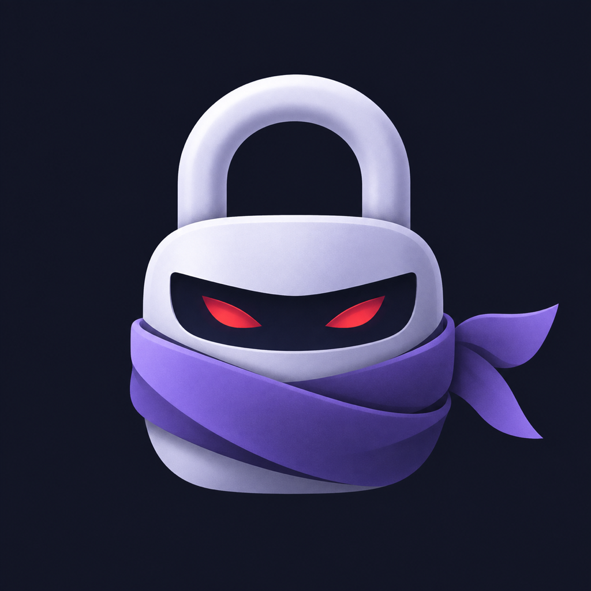

カルマロック
使いすぎを控えたいアプリに、時間の区切りを。
カルマロックは、選んだiPhoneアプリを曜日と時間帯に合わせてロックします。一時的に使う必要があるときは、自分で広告の視聴を選ぶと、対象のアプリを5分間解除できます。
使い方
- アプリを開き、スクリーンタイムの利用を許可します。
- 「ルールをつくる」から、曜日・時間帯・対象アプリを選んで保存します。
- 設定した時間帯になると、対象アプリがロックされます。
カテゴリを選ぶと、その時点で選択したアプリをルールに保存します。後からインストールしたアプリは、ルールを編集して追加してください。Webサイトは対象外です。
一時解除について
ロック画面からカルマロックを開き、解除対象を確認して「広告を見て5分間解除」を選びます。広告の視聴が完了した場合だけ、そのアプリを一時解除します。広告を途中で閉じた場合や表示できなかった場合は、ロックを続けます。
iOSからの通知タイミングによって、再ロックが遅れる場合があります。ルールの休止・削除にも広告の視聴が必要です。
広告が表示されないとき
インターネット接続を確認し、時間をおいて再度お試しください。配信可能な広告がない場合もあります。広告が表示できなくても、保存済みのルールによるロックは続きます。
対応環境
iOS 26.5以降のiPhone。スクリーンタイムの利用許可が必要です。
お問い合わせ
アプリのバージョン、iOSのバージョン、困っている操作をお知らせください。投稿は公開されるため、氏名・住所・アプリの選択情報などの個人情報は記載しないでください。